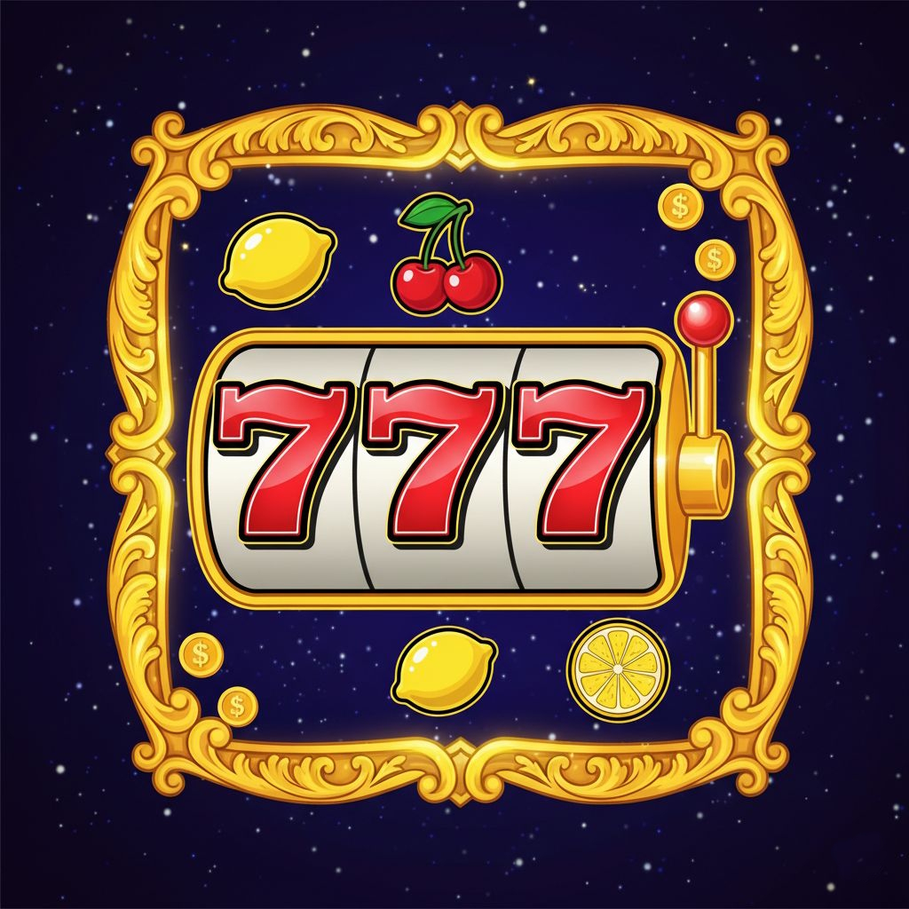
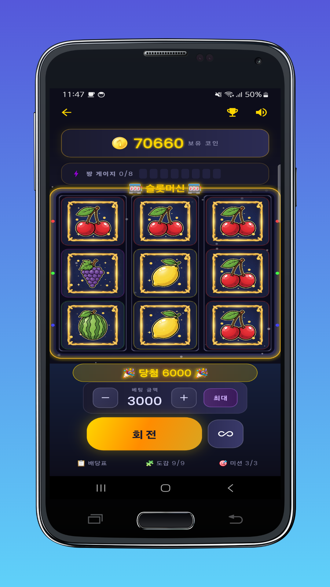

직관적인 3x3 슬롯 보드
5개의 페이라인과 즉시 이해되는 인터랙션으로, 누구나 바로 시작할 수 있는 클래식 슬롯 플레이를 구현했습니다.

슬롯 머신 Classic Neon SpinClassic Neon Slot Project
단순한 슬롯 머신을 넘어서 프리스핀, 하이스코어, 도감, 일일 미션을 담은 아케이드형 프로젝트입니다. GitHub Pages에 바로 올릴 수 있는 소개용 홈페이지로 구성했습니다.

Key Features
실제 플레이 흐름과 시스템이 한눈에 들어오도록, 게임 UX 중심으로 내용을 정리했습니다.
5개의 페이라인과 즉시 이해되는 인터랙션으로, 누구나 바로 시작할 수 있는 클래식 슬롯 플레이를 구현했습니다.
스캐터 심볼과 연속 실패 누적 보상으로 플레이 템포를 조절해, 단순 반복 대신 기대감을 유지합니다.
현재 보유 코인과 최고 기록을 비교하고, 등장 심볼을 도감으로 쌓아가며 장기 플레이 동기를 제공합니다.
스핀 횟수, 승리 횟수, 스캐터 수집, 연승 등 6개의 일일 미션으로 반복 플레이에 명확한 목표를 부여합니다.
Game Systems
Screens
타이틀 화면부터 플레이, 당첨 연출, 하이스코어 모달까지 주요 화면을 순서대로 배치했습니다.
Project Notes
클래식 슬롯 머신의 직관적인 흐름을 유지하면서 화면 연출과 보상 타이밍을 강화했습니다.
하이스코어, 심볼 도감, 일일 미션을 통해 한 번 하고 끝나지 않는 반복 동기를 넣었습니다.
타이틀, 플레이, 당첨 연출, 기록 확인까지 주요 흐름이 스크린샷만으로도 전달되도록 정리했습니다.
이 페이지는 빌드 도구 없이 정적 파일만으로 구성해 GitHub Pages에 바로 배포할 수 있습니다.